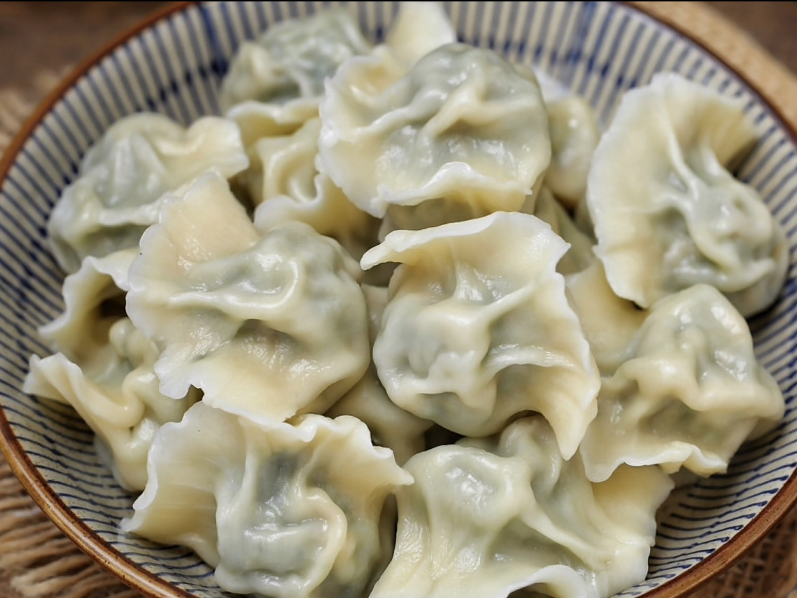
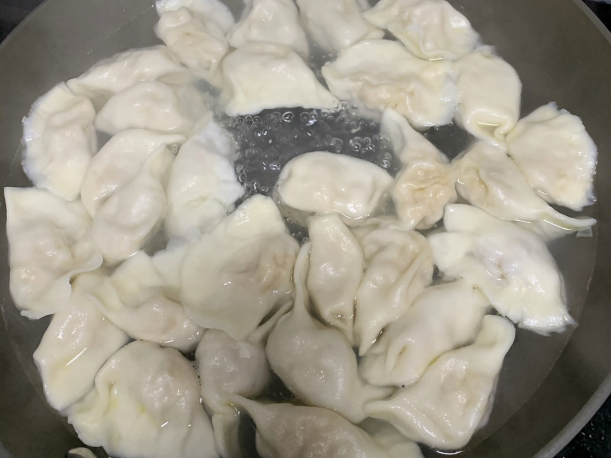
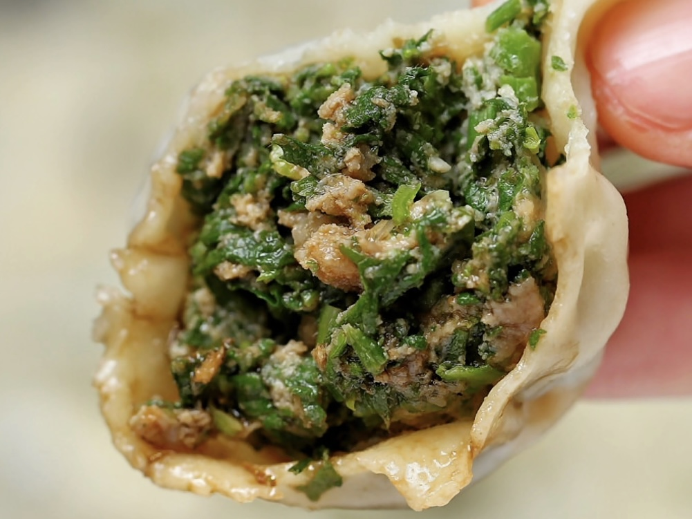

CORE I-INTERACTION

INGREDIENTS
Shepherd's purse, pork stuffing, all-purpose flour, cooking wine, light soy sauce and dark soy sauce, minced green onion, minced ginger, salt, sesame oil, oyster sauce and five-spice powder.
Dumpling
饺子
THIS DISH IS RECOMMENDED BY KE ZHANG
Dumplings are loved by many Chinese and are one of the must-have dishes for Chinese New Year, especially in northern China, where they are traditionally eaten on the 30th day of the Lunar New Year. This time, I made Shepherd's purse dumplings with pork filling. Shepherd's purse is a very tasty "wild vegetable".

STEP 1: Mix all-purpose flour with cold water.

STEP 2: Cover and wait five minutes to knead a smooth dough.

STEP 3: Wash the washed capers of water, chop them, and mix them with the pork froth. Then add, soy sauce, oyster sauce, salt, five-spice powder, and some cooking oil.

STEP 4: Roll the prepared dough into strips, then cut into small pieces and use a rolling pin to roll the small pieces into rounds.

STEP 5: Place the caper pork filling in the center of the crust.

STEP 6: Choose two symmetrical sides and pinch them together, then pinch the left and right sides together at the gaps.

STEP 7: Bring the water to a boil and add the dumplings. When they float, the dumplings are good to eat.
